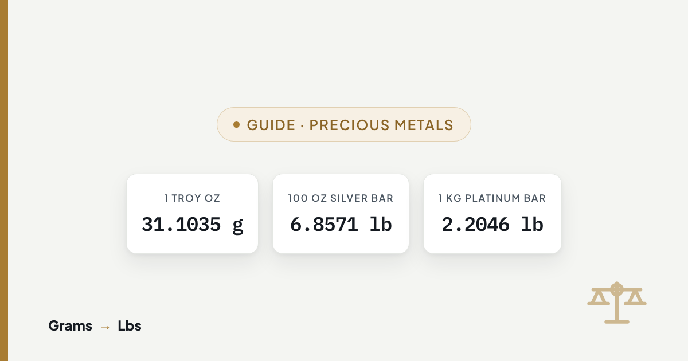

Silver and Platinum Weight: Grams to Pounds (Troy Ounce)
A troy ounce is not the same ounce as a bag of sugar, which is why a "100 oz" silver bar does not weigh 6.25 pounds. This converts silver and platinum weights through grams to get the real pound figure.

Silver and platinum are priced, weighed and traded in troy ounces, a different and slightly heavier unit than the avoirdupois ounce used for food, mail and almost everything else sold in pounds. One troy ounce equals exactly 31.1034768 grams, and that figure is the bridge between a silver or platinum weight quoted in troy ounces and its equivalent in grams or pounds — the charts below apply it to the coin and bar sizes buyers actually see.
The quick answer
To convert a silver or platinum weight from troy ounces to pounds, multiply the troy ounce figure by 31.1034768 to get grams, then divide that gram figure by 453.59237 to get avoirdupois pounds — the standard pound used for everyday weight. Doing both steps at once, one troy ounce works out to 0.0686 pounds, not the 0.0625 pounds (1/16) a regular ounce would give:
Troy ounces vs. regular ounces (and why it matters here)
A troy ounce is about 10% heavier than the avoirdupois ounce used for groceries and shipping, which is why skipping the troy-to-gram step and just dividing a troy-ounce figure by 16 gives the wrong pound number. One troy ounce is 31.1034768 grams, while one avoirdupois ounce is 28.349523125 grams; the same gram figure converts to 1.0971 avoirdupois ounces if the troy distinction is ignored, a 9.71% error that gets bigger as the quantity does.
Precious metals dealers use "ounce" to mean troy ounce by default — silver and platinum are quoted per troy ounce on every spot-price chart, bar, and coin specification. Outside precious metals, "ounce" almost always means the avoirdupois ounce. The two numbers are close enough to look interchangeable and different enough to matter once a weight is converted to pounds for shipping, customs, or comparing against a scale calibrated in avoirdupois units.
Silver coin and bar sizes converted to pounds
Common silver coin and bar sizes run from a single 1 troy ounce coin up to a 1,000 troy ounce good delivery bar, and each one converts to a different pound figure once the troy-to-avoirdupois math is applied:
| Silver item | Troy ounces | Grams (g) | Pounds (avoirdupois) |
|---|---|---|---|
| 1 oz coin or round | 1 troy oz | 31.10 g | 0.0686 lb |
| 5 oz bar | 5 troy oz | 155.52 g | 0.3429 lb |
| 10 oz bar | 10 troy oz | 311.03 g | 0.6857 lb |
| 1 kg bar | 32.1507 troy oz | 1,000.00 g | 2.2046 lb |
| 100 oz bar | 100 troy oz | 3,110.35 g | 6.8571 lb |
| 1,000 oz good delivery bar (nominal) | 1,000 troy oz | 31,103.48 g | 68.5714 lb |
The American Silver Eagle is minted at 31.103 grams by federal statute (31 U.S.C. § 5112(e)), and the Canadian Silver Maple Leaf is specified at 31.11 grams by the Royal Canadian Mint — both are essentially one troy ounce of silver, with the small gram-level difference coming from each mint's own rounding and tolerance, not from a different unit. Either figure converts to 0.0686 pounds.
A COMEX "1,000 oz" good delivery bar is a nominal size, not an exact one: actual bars are cast to weigh somewhere between roughly 750 and 1,100 troy ounces, with the exact figure stamped on the bar itself. 68.5714 lb above is what a bar cast at exactly 1,000 troy ounces would weigh; a real bar's pound figure should be calculated from its own stamped troy-ounce weight, not assumed from the nominal name.
Platinum bar sizes converted to pounds
Platinum uses the same troy ounce system as silver, so the same 31.1034768 g-per- troy-ounce figure applies directly — platinum is simply a denser metal, which changes a bar's physical size for a given weight, not the conversion math:
| Platinum item | Troy ounces | Grams (g) | Pounds (avoirdupois) |
|---|---|---|---|
| 1 oz bar or coin | 1 troy oz | 31.10 g | 0.0686 lb |
| 10 oz bar | 10 troy oz | 311.03 g | 0.6857 lb |
| 1 kg bar | 32.1507 troy oz | 1,000.00 g | 2.2046 lb |
Because platinum is denser than silver (about 21.45 g per cubic centimeter versus about 10.49 g per cubic centimeter for silver), a platinum bar is physically smaller than a silver bar of the same troy-ounce weight, even though both convert to the identical pound figure for a given troy-ounce amount — density changes a bar's size, not the unit conversion between troy ounces, grams, and pounds.
Converting any troy weight yourself
To convert a troy-ounce figure that isn't already in the charts above, multiply by 31.1034768 to get grams, then divide that result by 453.59237 to get avoirdupois pounds. Here is a 73 troy ounce lot, a size between the 10 oz and 100 oz bars above:
73 × 31.1034768 = 2,270.55 g
2,270.55 ÷ 453.59237 = 5.0057 lb
whole pounds → 5 lb
0.0057 × 16 = 0.09 oz
result → 5 lb 0.09 oz
2,270.55 ÷ 453.59237 = 5.0057 lb
whole pounds → 5 lb
0.0057 × 16 = 0.09 oz
result → 5 lb 0.09 oz
The same two-step math works in reverse: to turn a pound figure into troy ounces, multiply pounds by 453.59237 to get grams, then divide by 31.1034768. The converter does both directions instantly, with a choice of 2, 4 or 6 decimal places, for any gram, pound, or troy-ounce figure a listing or invoice gives.
The troy pound trap
A "troy pound" is not the same as the pound used to weigh a silver or platinum bar in everyday terms, and assuming otherwise understates the weight by about 17.71%. A troy pound is defined as exactly 12 troy ounces, which is 373.2417 grams, or 0.8229 avoirdupois pounds — lighter than a standard pound because the troy system uses 12 ounces per pound instead of 16.
When a silver or platinum weight is given in "pounds" without saying which system, the avoirdupois pound (453.59237 g, the one on a kitchen scale or a shipping label) is almost always meant, since the troy pound is rarely used outside of historical and numismatic contexts. One avoirdupois pound holds 14.5833 troy ounces, not the 12 troy ounces a troy pound would hold — confirming which pound is meant before comparing two listings avoids a real, sizeable discrepancy.
Frequently asked questions
How many grams are in a troy ounce of silver?
A troy ounce of silver is exactly 31.1034768 grams, the same troy ounce used for platinum and gold. This is about 10% heavier than the avoirdupois ounce (28.349523125 grams) used for everyday goods, so the two should never be substituted for each other in a conversion.
How much does a 100 oz silver bar weigh in pounds?
A 100 troy ounce silver bar weighs 6.8571 pounds, not 6.25 pounds. Dividing 100 by 16 (as if it were 100 regular ounces) gives the wrong, lighter figure; the correct method multiplies 100 by 31.1034768 to get 3,110.35 grams, then divides by 453.59237 to get 6.8571 avoirdupois pounds.
Why is a troy ounce different from a regular ounce?
The troy ounce and the avoirdupois ounce are two separate historical units that were never the same weight: a troy ounce is 31.1034768 grams and an avoirdupois ounce is 28.349523125 grams, a difference of about 9.7%. Precious metals including silver and platinum are weighed and priced in troy ounces by long-standing convention, while nearly everything else sold in ounces uses the avoirdupois ounce.
How many troy ounces are in a pound of silver?
An avoirdupois pound of silver (453.59237 grams) holds 14.5833 troy ounces, not 16 — that 16-ounce figure only applies to the avoirdupois ounce. A troy pound, a separate and far less common unit, holds exactly 12 troy ounces and weighs only 373.2417 grams, about 17.71% lighter than an avoirdupois pound.
Does a platinum bar weigh the same as a silver bar of the same troy-ounce size?
Yes, by weight — a 10 troy ounce platinum bar and a 10 troy ounce silver bar both weigh 311.03 grams (0.6857 pounds), since the troy-ounce-to-gram conversion is identical for both metals. The bars are not the same physical size, though, because platinum is denser (about 21.45 g/cm³) than silver (about 10.49 g/cm³), so the platinum bar is noticeably smaller for the same weight.
Is a "1,000 oz" silver bar exactly 1,000 troy ounces?
Not necessarily — a COMEX good delivery bar is cast to a nominal 1,000 troy ounces but can actually weigh anywhere from roughly 750 to 1,100 troy ounces, with its exact weight stamped on the bar. A bar cast at precisely 1,000 troy ounces weighs 68.5714 avoirdupois pounds; any real bar’s pound figure should be calculated from its own stamped troy-ounce weight, not assumed from the nominal size.
Sources
- International Yard and Pound Agreement, 1959 — defines the international avoirdupois pound as exactly 453.59237 g
- NIST Handbook 44, Appendix C — defines the troy ounce as exactly 31.1034768 g
- 31 U.S.C. § 5112(e) — sets the American Silver Eagle at 31.103 g of .999 fine silver
- Royal Canadian Mint product specifications — lists the Silver Maple Leaf at 31.11 g of .9999 fine silver